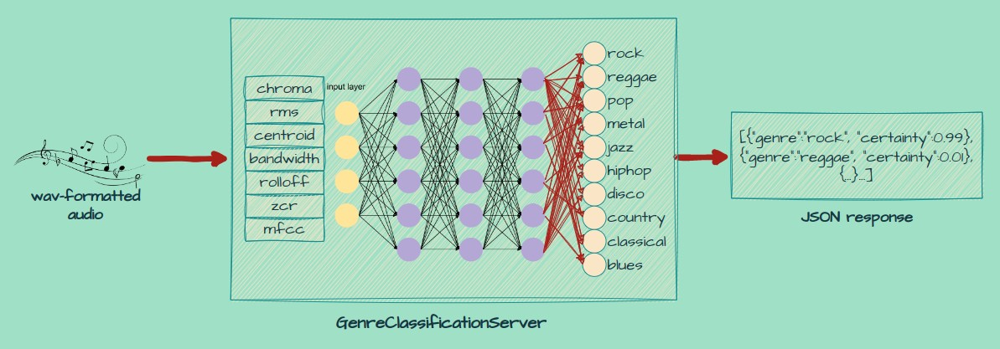

 At its very simplest, the GenrePrediction server is a webserver that accepts requests containing a .wav audio clip, and responds with a prediction of the genre of music contained within the clip in the form of JSON.
How it works
It works by first loading in the wav audio file, wherafter it extracts various features relating to the quality of the audio using the following function:
def extract_features(data):
features = []
for d in data:
y = d[0]
chroma_stft = librosa.feature.chroma_stft(y=y, sr=sr)
rmse = librosa.feature.rms(y=y)
spec_cent = librosa.feature.spectral_centroid(y=y, sr=sr)
spec_bw = librosa.feature.spectral_bandwidth(y=y, sr=sr)
rolloff = librosa.feature.spectral_rolloff(y=y, sr=sr)
zcr = librosa.feature.zero_crossing_rate(y)
mfcc = librosa.feature.mfcc(y=y, sr=sr)
features.append([np.mean(chroma_stft), np.mean(rmse), np.mean(spec_cent), np.mean(spec_bw), np.mean(rolloff), np.mean(zcr)]+[np.mean(mfcc[i]) for i in range(len(mfcc))])
return np.array(features)-
Chroma_STFT: Chroma Short-Time Fourier Transform (STFT) represents the tonal content of the audio signal. It maps the audio signal into 12 distinct bins, representing the 12 musical notes in an octave. It can help differentiate genres based on their tonal characteristics and harmonic content.
-
RMSE: Root Mean Square Energy (RMSE) is a measure of the audio signal’s energy or loudness. It can be useful for distinguishing genres with different overall energy levels, such as heavy metal (high energy) and ambient music (low energy).
-
Spectral Centroid: Spectral Centroid is a measure of the center of mass of the frequency spectrum. It can be interpreted as the “brightness” of the sound. A higher spectral centroid value indicates a brighter sound, which might help differentiate genres like classical (bright) and electronic (darker).
-
Spectral Bandwidth: Spectral Bandwidth represents the frequency spread of the audio signal. It can be useful for identifying genres with different frequency distributions, such as classical music (narrow bandwidth) and electronic music (wide bandwidth).
-
Spectral Rolloff: Spectral Rolloff is the frequency below which a certain percentage (usually 85% or 95%) of the total energy of the spectrum is contained. It can help differentiate genres based on their high-frequency content, such as electronic music (high rolloff) and classical music (low rolloff).
-
Zero Crossing Rate (ZCR): ZCR is the rate at which the audio signal changes its sign (crosses zero). It can help identify genres with different amounts of high-frequency content, like rock music (high ZCR) and classical music (low ZCR).
-
Mel-Frequency Cepstral Coefficients (MFCCs): MFCCs are a set of features that describe the shape of the power spectrum of an audio signal. They are widely used in audio processing tasks, including music genre classification. MFCCs can capture timbral and spectral characteristics of different music genres, which can help the neural network distinguish between them.
These extracted features represent different aspects of the audio signal, such as tonality, energy, frequency distribution, and timbral characteristics.
By providing these features to the neural network, it’s able to differentiate music genres based on their unique sonic properties and output ten values, each representing the certainty of the audio being associated with a genre.
The output is then converted into a JSON format in order to be easily consumable by any application as a web-service.
How it was made
To train the neural network, the GTZAN dataset was used. This dataset contains 1000 30-second audio clips, which were split into 3 second audio clips, resulting in 10000 3-second audio clips.
Using the feature extraction mentioned above, training data was prepared, containing the features of the audio and the corresponding label.
Then, the following neural network model was assembled:
model = models.Sequential()
model.add(layers.Dense(512, activation='relu', input_shape=(X_train.shape[1],)))
model.add(layers.Dropout(0.3))
model.add(layers.Dense(256, activation='relu'))
model.add(layers.Dropout(0.3))
model.add(layers.Dense(128, activation='relu'))
model.add(layers.Dropout(0.2))
model.add(layers.Dense(64, activation='relu'))
model.add(layers.Dropout(0.1))
model.add(layers.Dense(10, activation='softmax'))
model.compile(optimizer='adam', loss='sparse_categorical_crossentropy', metrics=['accuracy'])The model features a tapered architecture, in which both the width of the neural layers, as well as the dropout degree, decreases. Dropout layers randomly set input units to 0 with a frequency of rate at each step during training time, which helps prevent overfitting.
To train the final model, only 4000 out of the 10000 clips were used as it that seemed to be the most appropriate amount for the size of this network, in terms of validation accuracy.
The resulting model has a validation accuracy of 83% and classifies audio into one of the following 10 genres:
‘rock’,‘reggae’,‘pop’,‘metal’,‘jazz’,‘hiphop’,‘disco’,‘country’,‘classical’,‘blues’